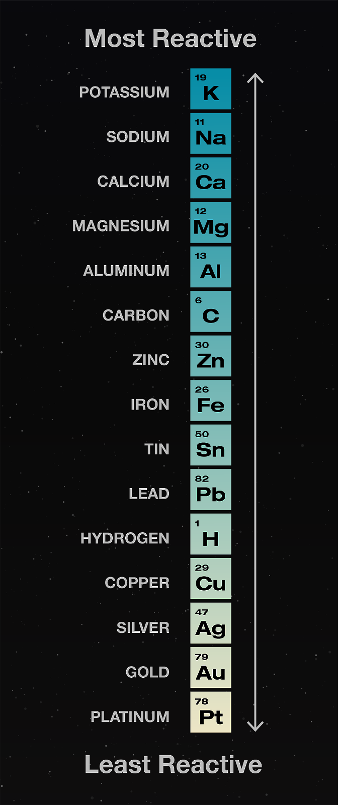
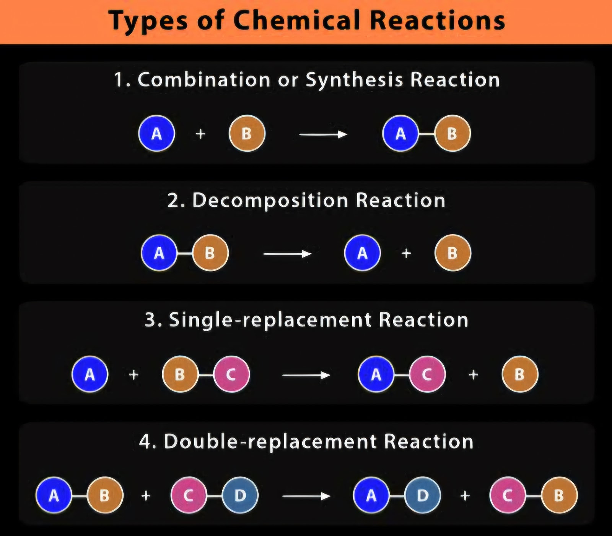

Generally speaking, displacement reactions are the reactions in which some part of a compound is displaced by a part or whole of another reactant.
There are two types of displacement reactions.
When an element or group reacts with a compound to displace another element or group from it, the reaction is called a single displacement reaction. For example, if we put an iron nail in a blue aqueous solution of copper sulphate, the following reaction occurs:
\[Fe_{(s)} + CuSO_{4 (aq)} \rightarrow Cu_{(s)} + FeSO_{4 (aq)}\]
Here the copper part of the \(CuSO_4\) solution is replaced by the solid iron present on the surface of the nail. This reaction mainly happens at the interface of the nail and the solution (because its the only place of interaction). Hence the newly formed solid copper is deposited on the iron nail, turning it brownish red (color of copper). And the solution turns green (color of \(FeSO_4\)).
Now, when you reverse this reaction on paper, it will lo'ok like copper is displacing iron from \(FeSO_4\). But that reaction doesn't happen. This is because of something called the Activity Series. It is an order of various elements which in a way tells us what element is more "powerful" as compared to another, as in what element may displace what from its compound.
According to this series, Fe is more reactive ("powerful) than Cu, so it is able to displace Cu from its compound \(CuSO_{4}\), and not the other way around.
As of now, don't spend too much time on why the activity series looks how it looks. You'll learn more about this in the Activity Series lesson in electrochemistry.
More examples:
In this reaction, a part from one reactant displaces a part of another reactant and is displaced by the same. It happens usually when two ionic compounds react in a solution, to form two new compounds. It is not controlled by any activity series like single displacement reactions, but has other factors. Usually the reaction is carried forward because one of the products formed is either a precipitate, or a gas, or the formation of a molecular species (mostly for water in aqueous solutions). For example:
\[NaCl_{(aq)} + AgNO_{3 (aq)} \rightarrow AgCl\downarrow + NaNO_{3 (aq)}\]
In the reaction above, \(AgCl\) is the precipitate.
The concept of a barter system is analogous to this reaction! Both species \(NaCl\) and \(AgNO_3\) exchange some parts and therefore, a "double" displacement occurs.
More examples:
Below is the summary for the four types of reactions (source : ChemistryLearner.com)
Written by Vasu Vijay